Reducing WFM data
Contents
Reducing WFM data#
This notebook aims to illustrate how to work with the wavelength frame multiplication submodule wfm.
We will create a beamline that resembles the ODIN instrument beamline, generate some fake neutron data, and then show how to convert the neutron arrival times at the detector to neutron time-of-flight, from which a wavelength can then be computed (or process also commonly known as ‘stitching’).
[1]:
import numpy as np
import matplotlib.pyplot as plt
import scipp as sc
from scipp import constants
import scippneutron as scn
import ess.wfm as wfm
import ess.choppers as ch
np.random.seed(1) # Fixed for reproducibility
Create beamline components#
We first create all the components necessary to a beamline to run in WFM mode (see Introduction to WFM for the meanings of the different symbols). The beamline will contain
a neutron source, located at the origin (\(x = y = z = 0\))
a pulse with a defined length (\(2860 ~\mu s\)) and \(t_0\) (\(130 ~\mu s\))
a single pixel detector, located at \(z = 60\) m
two WFM choppers, located at \(z = 6.775\) m and \(z = 7.225\) m, each with 6 frame windows/openings
The wfm module provides a helper function to quickly create such a beamline. It returns a dict of coordinates, that can then be subsequently added to a data container.
[2]:
coords = wfm.make_fake_beamline(nframes=6)
coords
[2]:
{'chopper_wfm_1': <scipp.Variable> () PyObject <no unit> DataGroup(sizes={'frame': 6}, keys=['frequency', 'position', 'phase', 'cutout_angles_center', 'cutout_angles_width', 'kind']),
'chopper_wfm_2': <scipp.Variable> () PyObject <no unit> DataGroup(sizes={'frame': 6}, keys=['frequency', 'position', 'phase', 'cutout_angles_center', 'cutout_angles_width', 'kind']),
'position': <scipp.Variable> () vector3 [m] (0, 0, 60),
'source_pulse_length': <scipp.Variable> () float64 [µs] 2860,
'source_pulse_t_0': <scipp.Variable> () float64 [µs] 130,
'source_position': <scipp.Variable> () vector3 [m] (0, 0, 0)}
Generate some fake data#
Next, we will generate some fake imaging data (no scattering will be considered), that is supposed to mimic a spectrum with a Bragg edge located at \(4\unicode{x212B}\). We start with describing a function which will act as our underlying distribution
[3]:
x = np.linspace(1, 10.0, 100000)
a = 20.0
b = 4.0
y1 = 0.7 / (np.exp(-a * (x - b)) + 1.0)
y2 = 1.4 - 0.2 * x
y = y1 + y2
fig1, ax1 = plt.subplots()
ax1.plot(x, y)
ax1.set_xlabel("Wavelength [angstroms]")
[3]:
Text(0.5, 0, 'Wavelength [angstroms]')
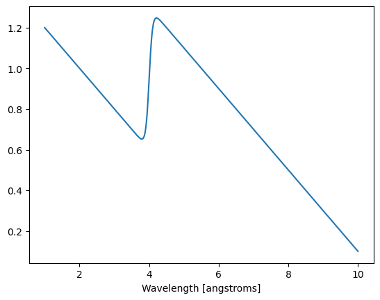
We then proceed to generate two sets of 1,000,000 events: - one for the sample using the distribution defined above - and one for the vanadium which will be just a flat random distribution
For the events in both sample and vanadium, we define a wavelength for the neutrons as well as a birth time, which will be a random time between the pulse \(t_0\) and the end of the usable pulse \(t_0\) + pulse_length.
[4]:
nevents = 1_000_000
events = {
"sample": {
"wavelengths": sc.array(
dims=["event"],
values=np.random.choice(x, size=nevents, p=y / np.sum(y)),
unit="angstrom",
),
"birth_times": sc.array(
dims=["event"],
values=np.random.random(nevents) * coords["source_pulse_length"].value,
unit="us",
)
+ coords["source_pulse_t_0"],
},
"vanadium": {
"wavelengths": sc.array(
dims=["event"],
values=np.random.random(nevents) * 9.0 + 1.0,
unit="angstrom",
),
"birth_times": sc.array(
dims=["event"],
values=np.random.random(nevents) * coords["source_pulse_length"].value,
unit="us",
)
+ coords["source_pulse_t_0"],
},
}
We can then take a quick look at our fake data by histogramming the events
[5]:
# Histogram and plot the event data
bins = np.linspace(1.0, 10.0, 129)
fig2, ax2 = plt.subplots()
for key in events:
h = ax2.hist(events[key]["wavelengths"].values, bins=128, alpha=0.5, label=key)
ax2.set_xlabel("Wavelength [angstroms]")
ax2.set_ylabel("Counts")
ax2.legend()
[5]:
<matplotlib.legend.Legend at 0x7fc12563f6a0>
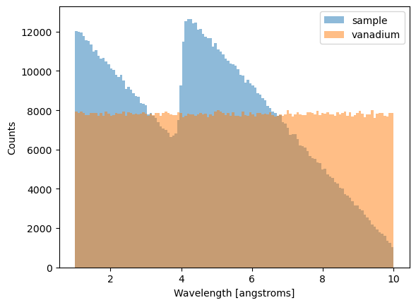
We can also verify that the birth times fall within the expected range:
[6]:
for key, item in events.items():
print(key)
print(sc.min(item["birth_times"]))
print(sc.max(item["birth_times"]))
sample
<scipp.Variable> () float64 [µs] 130.008
<scipp.Variable> () float64 [µs] 2990
vanadium
<scipp.Variable> () float64 [µs] 130.004
<scipp.Variable> () float64 [µs] 2990
We can then compute the arrival times of the events at the detector pixel
[7]:
# The ratio of neutron mass to the Planck constant
alpha = sc.to_unit(constants.m_n / constants.h, 'us/m/angstrom')
# The distance between the source and the detector
dz = sc.norm(coords['position'] - coords['source_position'])
for key, item in events.items():
item["arrival_times"] = alpha * dz * item["wavelengths"] + item["birth_times"]
events["sample"]["arrival_times"]
[7]:
- (event: 1000000)float64µs6.326e+04, 9.431e+04, ..., 2.788e+04, 5.809e+04
Values:
array([63257.61773626, 94307.95311489, 16899.66119625, ..., 70065.41396431, 27877.08441761, 58091.769017 ])
Visualize the beamline’s chopper cascade#
We first attach the beamline geometry to a Dataset
[8]:
ds = sc.Dataset(coords=coords)
ds
[8]:
- chopper_wfm_1()PyObjectDataGroup(sizes={'frame': 6}, keys=['frequency', 'position', 'phase', 'cutout...
Values:
DataGroup(sizes={'frame': 6}, keys=[ frequency: Variable({}), position: Variable({}), phase: Variable({}), cutout_angles_center: Variable({'frame': 6}), cutout_angles_width: Variable({'frame': 6}), kind: Variable({}), ]) - chopper_wfm_2()PyObjectDataGroup(sizes={'frame': 6}, keys=['frequency', 'position', 'phase', 'cutout...
Values:
DataGroup(sizes={'frame': 6}, keys=[ frequency: Variable({}), position: Variable({}), phase: Variable({}), cutout_angles_center: Variable({'frame': 6}), cutout_angles_width: Variable({'frame': 6}), kind: Variable({}), ]) - position()vector3m[ 0. 0. 60.]
Values:
array([ 0., 0., 60.]) - source_position()vector3m[0. 0. 0.]
Values:
array([0., 0., 0.]) - source_pulse_length()float64µs2860.0
Values:
array(2860.) - source_pulse_t_0()float64µs130.0
Values:
array(130.)
The wfm.plot submodule provides a useful tool to visualize the chopper cascade as a time-distance diagram. This is achieved by calling
[9]:
f = wfm.plot.time_distance_diagram(ds)

This shows the 6 frames, generated by the WFM choppers, as well as their predicted time boundaries at the position of the detector.
Each frame has a time window during which neutrons are allowed to pass through, as well as minimum and maximum allowed wavelengths.
This information is obtained from the beamline geometry by calling
[10]:
frames = wfm.get_frames(ds)
frames
[10]:
- time_correctionscippVariable(frame: 6)float64µs4702.574, 7277.777, ..., 1.408e+04, 1.607e+04
- time_minscippVariable(frame: 6)float64µs1.804e+04, 4.068e+04, ..., 1.005e+05, 1.180e+05
- delta_time_minscippVariable(frame: 6)float64µs113.750, 284.797, ..., 736.629, 868.881
- time_maxscippVariable(frame: 6)float64µs3.839e+04, 5.993e+04, ..., 1.168e+05, 1.335e+05
- delta_time_maxscippVariable(frame: 6)float64µs284.797, 445.190, ..., 868.881, 992.895
- wavelength_minscippVariable(frame: 6)float64Å1.000, 2.504, ..., 6.476, 7.638
- wavelength_maxscippVariable(frame: 6)float64Å2.504, 3.914, ..., 7.638, 8.729
- delta_wavelength_minscippVariable(frame: 6)float64Å0.008, 0.021, ..., 0.055, 0.065
- delta_wavelength_maxscippVariable(frame: 6)float64Å0.021, 0.033, ..., 0.065, 0.074
- wfm_chopper_mid_pointscippVariable()vector3m[0. 0. 7.]
Discard neutrons that do not make it through the chopper windows#
Once we have the parameters of the 6 wavelength frames, we need to run through all our generated neutrons and filter out all the neutrons with invalid flight paths, i.e. the ones that do not make it through both chopper openings in a given frame.
[11]:
for item in events.values():
item["valid_indices"] = []
near_wfm_chopper = ds.coords["chopper_wfm_1"].value
far_wfm_chopper = ds.coords["chopper_wfm_2"].value
near_time_open = ch.time_open(near_wfm_chopper)
near_time_close = ch.time_closed(near_wfm_chopper)
far_time_open = ch.time_open(far_wfm_chopper)
far_time_close = ch.time_closed(far_wfm_chopper)
for item in events.values():
# Compute event arrival times at wfm choppers 1 and 2
slopes = 1.0 / (alpha * item["wavelengths"])
intercepts = -slopes * item["birth_times"]
times_at_wfm1 = (sc.norm(near_wfm_chopper["position"]) - intercepts) / slopes
times_at_wfm2 = (sc.norm(far_wfm_chopper["position"]) - intercepts) / slopes
# Create a mask to see if neutrons go through one of the openings
mask = sc.zeros(dims=times_at_wfm1.dims, shape=times_at_wfm1.shape, dtype=bool)
for i in range(len(frames["time_min"])):
mask |= (
(times_at_wfm1 >= near_time_open["frame", i])
& (times_at_wfm1 <= near_time_close["frame", i])
& (item["wavelengths"] >= frames["wavelength_min"]["frame", i])
& (item["wavelengths"] <= frames["wavelength_max"]["frame", i])
)
item["valid_indices"] = np.ravel(np.where(mask.values))
Create a realistic Dataset#
We now create a dataset that contains: - the beamline geometry - the time coordinate - the histogrammed events
[12]:
for item in events.values():
item["valid_times"] = item["arrival_times"].values[item["valid_indices"]]
tmin = min([item["valid_times"].min() for item in events.values()])
tmax = max([item["valid_times"].max() for item in events.values()])
dt = 0.1 * (tmax - tmin)
time_coord = sc.linspace(
dim='time',
start=tmin - dt,
stop=tmax + dt,
num=257,
unit=events["sample"]["arrival_times"].unit,
)
# Histogram the data
histogrammed_data = {}
for key, item in events.items():
da = sc.DataArray(
data=sc.ones(
dims=['time'],
shape=[len(item["valid_times"])],
unit=sc.units.counts,
with_variances=True,
),
coords={
'time': sc.array(
dims=['time'], values=item["valid_times"], unit=sc.units.us
)
},
)
histogrammed_data[key] = da.hist(time=time_coord)
ds = sc.Dataset(histogrammed_data, coords=ds.coords)
ds
[12]:
- time: 256
- chopper_wfm_1()PyObjectDataGroup(sizes={'frame': 6}, keys=['frequency', 'position', 'phase', 'cutout...
Values:
DataGroup(sizes={'frame': 6}, keys=[ frequency: Variable({}), position: Variable({}), phase: Variable({}), cutout_angles_center: Variable({'frame': 6}), cutout_angles_width: Variable({'frame': 6}), kind: Variable({}), ]) - chopper_wfm_2()PyObjectDataGroup(sizes={'frame': 6}, keys=['frequency', 'position', 'phase', 'cutout...
Values:
DataGroup(sizes={'frame': 6}, keys=[ frequency: Variable({}), position: Variable({}), phase: Variable({}), cutout_angles_center: Variable({'frame': 6}), cutout_angles_width: Variable({'frame': 6}), kind: Variable({}), ]) - position()vector3m[ 0. 0. 60.]
Values:
array([ 0., 0., 60.]) - source_position()vector3m[0. 0. 0.]
Values:
array([0., 0., 0.]) - source_pulse_length()float64µs2860.0
Values:
array(2860.) - source_pulse_t_0()float64µs130.0
Values:
array(130.) - time(time [bin-edge])float64µs6358.679, 6900.323, ..., 1.445e+05, 1.450e+05
Values:
array([ 6358.67925226, 6900.32304418, 7441.96683611, 7983.61062803, 8525.25441996, 9066.89821189, 9608.54200381, 10150.18579574, 10691.82958766, 11233.47337959, 11775.11717151, 12316.76096344, 12858.40475537, 13400.04854729, 13941.69233922, 14483.33613114, 15024.97992307, 15566.623715 , 16108.26750692, 16649.91129885, 17191.55509077, 17733.1988827 , 18274.84267462, 18816.48646655, 19358.13025848, 19899.7740504 , 20441.41784233, 20983.06163425, 21524.70542618, 22066.34921811, 22607.99301003, 23149.63680196, 23691.28059388, 24232.92438581, 24774.56817774, 25316.21196966, 25857.85576159, 26399.49955351, 26941.14334544, 27482.78713736, 28024.43092929, 28566.07472122, 29107.71851314, 29649.36230507, 30191.00609699, 30732.64988892, 31274.29368085, 31815.93747277, 32357.5812647 , 32899.22505662, 33440.86884855, 33982.51264047, 34524.1564324 , 35065.80022433, 35607.44401625, 36149.08780818, 36690.7316001 , 37232.37539203, 37774.01918396, 38315.66297588, 38857.30676781, 39398.95055973, 39940.59435166, 40482.23814358, 41023.88193551, 41565.52572744, 42107.16951936, 42648.81331129, 43190.45710321, 43732.10089514, 44273.74468707, 44815.38847899, 45357.03227092, 45898.67606284, 46440.31985477, 46981.9636467 , 47523.60743862, 48065.25123055, 48606.89502247, 49148.5388144 , 49690.18260632, 50231.82639825, 50773.47019018, 51315.1139821 , 51856.75777403, 52398.40156595, 52940.04535788, 53481.68914981, 54023.33294173, 54564.97673366, 55106.62052558, 55648.26431751, 56189.90810943, 56731.55190136, 57273.19569329, 57814.83948521, 58356.48327714, 58898.12706906, 59439.77086099, 59981.41465292, 60523.05844484, 61064.70223677, 61606.34602869, 62147.98982062, 62689.63361255, 63231.27740447, 63772.9211964 , 64314.56498832, 64856.20878025, 65397.85257217, 65939.4963641 , 66481.14015603, 67022.78394795, 67564.42773988, 68106.0715318 , 68647.71532373, 69189.35911566, 69731.00290758, 70272.64669951, 70814.29049143, 71355.93428336, 71897.57807528, 72439.22186721, 72980.86565914, 73522.50945106, 74064.15324299, 74605.79703491, 75147.44082684, 75689.08461877, 76230.72841069, 76772.37220262, 77314.01599454, 77855.65978647, 78397.30357839, 78938.94737032, 79480.59116225, 80022.23495417, 80563.8787461 , 81105.52253802, 81647.16632995, 82188.81012188, 82730.4539138 , 83272.09770573, 83813.74149765, 84355.38528958, 84897.02908151, 85438.67287343, 85980.31666536, 86521.96045728, 87063.60424921, 87605.24804113, 88146.89183306, 88688.53562499, 89230.17941691, 89771.82320884, 90313.46700076, 90855.11079269, 91396.75458462, 91938.39837654, 92480.04216847, 93021.68596039, 93563.32975232, 94104.97354424, 94646.61733617, 95188.2611281 , 95729.90492002, 96271.54871195, 96813.19250387, 97354.8362958 , 97896.48008773, 98438.12387965, 98979.76767158, 99521.4114635 , 100063.05525543, 100604.69904736, 101146.34283928, 101687.98663121, 102229.63042313, 102771.27421506, 103312.91800698, 103854.56179891, 104396.20559084, 104937.84938276, 105479.49317469, 106021.13696661, 106562.78075854, 107104.42455047, 107646.06834239, 108187.71213432, 108729.35592624, 109270.99971817, 109812.64351009, 110354.28730202, 110895.93109395, 111437.57488587, 111979.2186778 , 112520.86246972, 113062.50626165, 113604.15005358, 114145.7938455 , 114687.43763743, 115229.08142935, 115770.72522128, 116312.36901321, 116854.01280513, 117395.65659706, 117937.30038898, 118478.94418091, 119020.58797283, 119562.23176476, 120103.87555669, 120645.51934861, 121187.16314054, 121728.80693246, 122270.45072439, 122812.09451632, 123353.73830824, 123895.38210017, 124437.02589209, 124978.66968402, 125520.31347594, 126061.95726787, 126603.6010598 , 127145.24485172, 127686.88864365, 128228.53243557, 128770.1762275 , 129311.82001943, 129853.46381135, 130395.10760328, 130936.7513952 , 131478.39518713, 132020.03897905, 132561.68277098, 133103.32656291, 133644.97035483, 134186.61414676, 134728.25793868, 135269.90173061, 135811.54552254, 136353.18931446, 136894.83310639, 137436.47689831, 137978.12069024, 138519.76448217, 139061.40827409, 139603.05206602, 140144.69585794, 140686.33964987, 141227.98344179, 141769.62723372, 142311.27102565, 142852.91481757, 143394.5586095 , 143936.20240142, 144477.84619335, 145019.48998528])
- sample(time)float64counts0.0, 0.0, ..., 0.0, 0.0σ = 0.0, 0.0, ..., 0.0, 0.0
Values:
array([ 0., 0., 0., 0., 0., 0., 0., 0., 0., 0., 0., 0., 0., 0., 0., 0., 0., 0., 0., 0., 0., 319., 701., 689., 658., 664., 696., 652., 664., 681., 665., 630., 634., 605., 630., 648., 608., 618., 595., 609., 599., 637., 643., 634., 553., 638., 571., 621., 549., 574., 533., 532., 512., 540., 571., 546., 514., 501., 439., 8., 0., 0., 0., 506., 837., 799., 804., 781., 815., 742., 776., 808., 783., 708., 727., 724., 674., 699., 715., 732., 626., 687., 660., 642., 711., 659., 655., 652., 650., 633., 635., 568., 616., 568., 586., 633., 618., 601., 338., 0., 0., 0., 227., 922., 1144., 1285., 1390., 1390., 1469., 1522., 1465., 1564., 1529., 1428., 1459., 1525., 1405., 1458., 1484., 1391., 1433., 1402., 1384., 1437., 1407., 1424., 1346., 1348., 1355., 1380., 1316., 1345., 1347., 1262., 1316., 798., 18., 0., 0., 536., 1462., 1528., 1495., 1570., 1520., 1555., 1554., 1498., 1521., 1438., 1407., 1449., 1427., 1424., 1331., 1439., 1371., 1364., 1369., 1305., 1411., 1372., 1391., 1280., 1253., 1312., 1281., 1296., 1275., 1251., 644., 19., 0., 114., 911., 1397., 1412., 1356., 1327., 1340., 1325., 1333., 1371., 1342., 1307., 1253., 1268., 1266., 1191., 1180., 1161., 1194., 1138., 1091., 1111., 1078., 1045., 1097., 1061., 1042., 1010., 1071., 937., 262., 0., 5., 392., 959., 1111., 1120., 1108., 1062., 1048., 1011., 1056., 955., 1026., 977., 943., 940., 938., 950., 901., 903., 870., 854., 790., 788., 844., 829., 794., 743., 724., 507., 113., 0., 0., 0., 0., 0., 0., 0., 0., 0., 0., 0., 0., 0., 0., 0., 0., 0., 0., 0., 0., 0.])
Variances (σ²):
array([ 0., 0., 0., 0., 0., 0., 0., 0., 0., 0., 0., 0., 0., 0., 0., 0., 0., 0., 0., 0., 0., 319., 701., 689., 658., 664., 696., 652., 664., 681., 665., 630., 634., 605., 630., 648., 608., 618., 595., 609., 599., 637., 643., 634., 553., 638., 571., 621., 549., 574., 533., 532., 512., 540., 571., 546., 514., 501., 439., 8., 0., 0., 0., 506., 837., 799., 804., 781., 815., 742., 776., 808., 783., 708., 727., 724., 674., 699., 715., 732., 626., 687., 660., 642., 711., 659., 655., 652., 650., 633., 635., 568., 616., 568., 586., 633., 618., 601., 338., 0., 0., 0., 227., 922., 1144., 1285., 1390., 1390., 1469., 1522., 1465., 1564., 1529., 1428., 1459., 1525., 1405., 1458., 1484., 1391., 1433., 1402., 1384., 1437., 1407., 1424., 1346., 1348., 1355., 1380., 1316., 1345., 1347., 1262., 1316., 798., 18., 0., 0., 536., 1462., 1528., 1495., 1570., 1520., 1555., 1554., 1498., 1521., 1438., 1407., 1449., 1427., 1424., 1331., 1439., 1371., 1364., 1369., 1305., 1411., 1372., 1391., 1280., 1253., 1312., 1281., 1296., 1275., 1251., 644., 19., 0., 114., 911., 1397., 1412., 1356., 1327., 1340., 1325., 1333., 1371., 1342., 1307., 1253., 1268., 1266., 1191., 1180., 1161., 1194., 1138., 1091., 1111., 1078., 1045., 1097., 1061., 1042., 1010., 1071., 937., 262., 0., 5., 392., 959., 1111., 1120., 1108., 1062., 1048., 1011., 1056., 955., 1026., 977., 943., 940., 938., 950., 901., 903., 870., 854., 790., 788., 844., 829., 794., 743., 724., 507., 113., 0., 0., 0., 0., 0., 0., 0., 0., 0., 0., 0., 0., 0., 0., 0., 0., 0., 0., 0., 0., 0.]) - vanadium(time)float64counts0.0, 0.0, ..., 0.0, 0.0σ = 0.0, 0.0, ..., 0.0, 0.0
Values:
array([ 0., 0., 0., 0., 0., 0., 0., 0., 0., 0., 0., 0., 0., 0., 0., 0., 0., 0., 0., 0., 0., 226., 439., 426., 453., 442., 433., 449., 417., 443., 427., 453., 439., 451., 404., 425., 469., 476., 472., 418., 408., 434., 442., 460., 456., 482., 424., 478., 459., 439., 473., 442., 420., 424., 465., 435., 429., 405., 394., 7., 0., 0., 0., 370., 717., 717., 688., 675., 709., 671., 694., 681., 723., 707., 692., 680., 721., 717., 720., 693., 670., 695., 684., 693., 715., 715., 609., 714., 710., 682., 692., 720., 653., 696., 662., 650., 734., 688., 347., 0., 0., 0., 250., 946., 918., 946., 930., 884., 923., 974., 924., 893., 898., 945., 927., 931., 925., 945., 962., 953., 974., 904., 881., 946., 957., 946., 883., 1037., 916., 933., 943., 991., 994., 933., 889., 611., 14., 0., 0., 350., 1068., 1143., 1166., 1161., 1167., 1210., 1123., 1118., 1213., 1111., 1164., 1187., 1230., 1189., 1115., 1067., 1157., 1184., 1187., 1186., 1142., 1133., 1198., 1221., 1109., 1174., 1154., 1120., 1121., 1140., 598., 14., 0., 105., 817., 1373., 1442., 1377., 1244., 1333., 1368., 1384., 1361., 1356., 1373., 1384., 1385., 1347., 1348., 1315., 1393., 1355., 1332., 1316., 1397., 1361., 1397., 1392., 1381., 1334., 1287., 1409., 1165., 429., 0., 14., 569., 1388., 1603., 1579., 1573., 1508., 1555., 1553., 1522., 1493., 1554., 1473., 1619., 1550., 1592., 1622., 1529., 1500., 1576., 1575., 1534., 1555., 1603., 1516., 1566., 1559., 1577., 1074., 271., 0., 0., 0., 0., 0., 0., 0., 0., 0., 0., 0., 0., 0., 0., 0., 0., 0., 0., 0., 0., 0.])
Variances (σ²):
array([ 0., 0., 0., 0., 0., 0., 0., 0., 0., 0., 0., 0., 0., 0., 0., 0., 0., 0., 0., 0., 0., 226., 439., 426., 453., 442., 433., 449., 417., 443., 427., 453., 439., 451., 404., 425., 469., 476., 472., 418., 408., 434., 442., 460., 456., 482., 424., 478., 459., 439., 473., 442., 420., 424., 465., 435., 429., 405., 394., 7., 0., 0., 0., 370., 717., 717., 688., 675., 709., 671., 694., 681., 723., 707., 692., 680., 721., 717., 720., 693., 670., 695., 684., 693., 715., 715., 609., 714., 710., 682., 692., 720., 653., 696., 662., 650., 734., 688., 347., 0., 0., 0., 250., 946., 918., 946., 930., 884., 923., 974., 924., 893., 898., 945., 927., 931., 925., 945., 962., 953., 974., 904., 881., 946., 957., 946., 883., 1037., 916., 933., 943., 991., 994., 933., 889., 611., 14., 0., 0., 350., 1068., 1143., 1166., 1161., 1167., 1210., 1123., 1118., 1213., 1111., 1164., 1187., 1230., 1189., 1115., 1067., 1157., 1184., 1187., 1186., 1142., 1133., 1198., 1221., 1109., 1174., 1154., 1120., 1121., 1140., 598., 14., 0., 105., 817., 1373., 1442., 1377., 1244., 1333., 1368., 1384., 1361., 1356., 1373., 1384., 1385., 1347., 1348., 1315., 1393., 1355., 1332., 1316., 1397., 1361., 1397., 1392., 1381., 1334., 1287., 1409., 1165., 429., 0., 14., 569., 1388., 1603., 1579., 1573., 1508., 1555., 1553., 1522., 1493., 1554., 1473., 1619., 1550., 1592., 1622., 1529., 1500., 1576., 1575., 1534., 1555., 1603., 1516., 1566., 1559., 1577., 1074., 271., 0., 0., 0., 0., 0., 0., 0., 0., 0., 0., 0., 0., 0., 0., 0., 0., 0., 0., 0., 0., 0.])
[13]:
ds.plot()
[13]:
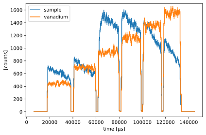
Stitch the frames#
Wave-frame multiplication consists of making 6 new pulses from the original pulse. This implies that the WFM choppers are acting as a source chopper. Hence, to compute a wavelength from a time and a distance between source and detector, the location of the source must now be at the position of the WFM choppers, or more exactly at the mid-point between the two WFM choppers.
The stitching operation equates to converting the time dimension to time-of-flight, by subtracting from each frame a time shift equal to the mid-point between the two WFM choppers.
This is performed with the stitch function in the wfm module:
[14]:
stitched = wfm.stitch(frames=frames, data=ds, dim='time', bins=257)
stitched
[14]:
- tof: 257
- chopper_wfm_1()PyObjectDataGroup(sizes={'frame': 6}, keys=['frequency', 'position', 'phase', 'cutout...
Values:
DataGroup(sizes={'frame': 6}, keys=[ frequency: Variable({}), position: Variable({}), phase: Variable({}), cutout_angles_center: Variable({'frame': 6}), cutout_angles_width: Variable({'frame': 6}), kind: Variable({}), ]) - chopper_wfm_2()PyObjectDataGroup(sizes={'frame': 6}, keys=['frequency', 'position', 'phase', 'cutout...
Values:
DataGroup(sizes={'frame': 6}, keys=[ frequency: Variable({}), position: Variable({}), phase: Variable({}), cutout_angles_center: Variable({'frame': 6}), cutout_angles_width: Variable({'frame': 6}), kind: Variable({}), ]) - position()vector3m[ 0. 0. 60.]
Values:
array([ 0., 0., 60.]) - source_position()vector3m[0. 0. 7.]
Values:
array([0., 0., 7.]) - source_pulse_length()float64µs2860.0
Values:
array(2860.) - source_pulse_t_0()float64µs130.0
Values:
array(130.) - tof(tof [bin-edge])float64µs1.334e+04, 1.375e+04, ..., 1.170e+05, 1.174e+05
Values:
array([ 13340.38075481, 13745.4276339 , 14150.474513 , 14555.52139209, 14960.56827119, 15365.61515028, 15770.66202938, 16175.70890847, 16580.75578757, 16985.80266666, 17390.84954576, 17795.89642485, 18200.94330395, 18605.99018304, 19011.03706213, 19416.08394123, 19821.13082032, 20226.17769942, 20631.22457851, 21036.27145761, 21441.3183367 , 21846.3652158 , 22251.41209489, 22656.45897399, 23061.50585308, 23466.55273218, 23871.59961127, 24276.64649037, 24681.69336946, 25086.74024856, 25491.78712765, 25896.83400675, 26301.88088584, 26706.92776494, 27111.97464403, 27517.02152313, 27922.06840222, 28327.11528132, 28732.16216041, 29137.20903951, 29542.2559186 , 29947.3027977 , 30352.34967679, 30757.39655589, 31162.44343498, 31567.49031408, 31972.53719317, 32377.58407226, 32782.63095136, 33187.67783045, 33592.72470955, 33997.77158864, 34402.81846774, 34807.86534683, 35212.91222593, 35617.95910502, 36023.00598412, 36428.05286321, 36833.09974231, 37238.1466214 , 37643.1935005 , 38048.24037959, 38453.28725869, 38858.33413778, 39263.38101688, 39668.42789597, 40073.47477507, 40478.52165416, 40883.56853326, 41288.61541235, 41693.66229145, 42098.70917054, 42503.75604964, 42908.80292873, 43313.84980783, 43718.89668692, 44123.94356602, 44528.99044511, 44934.03732421, 45339.0842033 , 45744.13108239, 46149.17796149, 46554.22484058, 46959.27171968, 47364.31859877, 47769.36547787, 48174.41235696, 48579.45923606, 48984.50611515, 49389.55299425, 49794.59987334, 50199.64675244, 50604.69363153, 51009.74051063, 51414.78738972, 51819.83426882, 52224.88114791, 52629.92802701, 53034.9749061 , 53440.0217852 , 53845.06866429, 54250.11554339, 54655.16242248, 55060.20930158, 55465.25618067, 55870.30305977, 56275.34993886, 56680.39681796, 57085.44369705, 57490.49057615, 57895.53745524, 58300.58433434, 58705.63121343, 59110.67809252, 59515.72497162, 59920.77185071, 60325.81872981, 60730.8656089 , 61135.912488 , 61540.95936709, 61946.00624619, 62351.05312528, 62756.10000438, 63161.14688347, 63566.19376257, 63971.24064166, 64376.28752076, 64781.33439985, 65186.38127895, 65591.42815804, 65996.47503714, 66401.52191623, 66806.56879533, 67211.61567442, 67616.66255352, 68021.70943261, 68426.75631171, 68831.8031908 , 69236.8500699 , 69641.89694899, 70046.94382809, 70451.99070718, 70857.03758628, 71262.08446537, 71667.13134447, 72072.17822356, 72477.22510265, 72882.27198175, 73287.31886084, 73692.36573994, 74097.41261903, 74502.45949813, 74907.50637722, 75312.55325632, 75717.60013541, 76122.64701451, 76527.6938936 , 76932.7407727 , 77337.78765179, 77742.83453089, 78147.88140998, 78552.92828908, 78957.97516817, 79363.02204727, 79768.06892636, 80173.11580546, 80578.16268455, 80983.20956365, 81388.25644274, 81793.30332184, 82198.35020093, 82603.39708003, 83008.44395912, 83413.49083822, 83818.53771731, 84223.58459641, 84628.6314755 , 85033.6783546 , 85438.72523369, 85843.77211278, 86248.81899188, 86653.86587097, 87058.91275007, 87463.95962916, 87869.00650826, 88274.05338735, 88679.10026645, 89084.14714554, 89489.19402464, 89894.24090373, 90299.28778283, 90704.33466192, 91109.38154102, 91514.42842011, 91919.47529921, 92324.5221783 , 92729.5690574 , 93134.61593649, 93539.66281559, 93944.70969468, 94349.75657378, 94754.80345287, 95159.85033197, 95564.89721106, 95969.94409016, 96374.99096925, 96780.03784835, 97185.08472744, 97590.13160654, 97995.17848563, 98400.22536473, 98805.27224382, 99210.31912291, 99615.36600201, 100020.4128811 , 100425.4597602 , 100830.50663929, 101235.55351839, 101640.60039748, 102045.64727658, 102450.69415567, 102855.74103477, 103260.78791386, 103665.83479296, 104070.88167205, 104475.92855115, 104880.97543024, 105286.02230934, 105691.06918843, 106096.11606753, 106501.16294662, 106906.20982572, 107311.25670481, 107716.30358391, 108121.350463 , 108526.3973421 , 108931.44422119, 109336.49110029, 109741.53797938, 110146.58485848, 110551.63173757, 110956.67861667, 111361.72549576, 111766.77237486, 112171.81925395, 112576.86613304, 112981.91301214, 113386.95989123, 113792.00677033, 114197.05364942, 114602.10052852, 115007.14740761, 115412.19428671, 115817.2411658 , 116222.2880449 , 116627.33492399, 117032.38180309, 117437.42868218])
- sample(tof)float64counts360.674, 523.405, ..., 378.749, 84.503σ = 18.991, 22.878, ..., 19.461, 9.193
Values:
array([ 360.67353486, 523.40509561, 515.241389 , 497.78459404, 493.92486266, 498.42591331, 520.47606204, 496.08403926, 491.198498 , 497.39587353, 509.25890553, 500.52921129, 487.02436725, 471.28548043, 474.11181513, 458.54323399, 459.54176404, 471.70500629, 484.58116121, 463.45758674, 457.42774181, 461.60151291, 444.94720821, 452.21784357, 452.74513897, 448.50662463, 476.35524644, 479.41868344, 478.51665963, 473.61012533, 413.53916998, 456.19340837, 460.37818166, 426.99975779, 464.26205135, 428.89022553, 416.56959672, 429.2431891 , 399.04719721, 398.09866326, 393.19298137, 382.87894219, 403.25536379, 418.55936742, 421.41600252, 408.30449695, 385.29742243, 378.30640339, 361.34832673, 691.00178499, 554.37317422, 620.16272119, 597.50053674, 601.04086602, 590.75443425, 590.96529752, 609.46550368, 558.41604952, 570.07735486, 586.53860745, 604.23083064, 586.96709747, 552.65858771, 532.98702095, 543.65818549, 541.6128123 , 519.93467934, 508.45953077, 522.71949334, 533.48801812, 541.83879524, 529.51994899, 468.12933166, 508.65007828, 502.61947398, 490.67676917, 480.09429861, 525.32492127, 510.72022991, 492.20252743, 489.81583425, 487.87556023, 486.78326606, 483.65634121, 473.3640047 , 474.64000418, 449.01034376, 431.17011578, 460.65122732, 430.44763637, 431.54326091, 444.08544457, 473.3640047 , 464.05675649, 455.88585618, 549.2881028 , 646.45100076, 751.02333862, 855.49513646, 935.25099734, 993.84916557, 1039.45650321, 1039.45650321, 1083.45050822, 1114.68244588, 1135.17458108, 1095.54228576, 1149.8069454 , 1159.2176779 , 1138.98353048, 1067.8732997 , 1084.59375764, 1110.00930612, 1136.21205432, 1050.67365972, 1078.79606111, 1097.54657902, 1107.31108803, 1040.20431365, 1062.12214312, 1063.25278285, 1048.11569731, 1034.96964061, 1062.16366599, 1066.77643603, 1052.31744726, 1064.88205797, 1025.54380672, 1007.05713809, 1008.04846499, 1013.28283998, 1025.67259528, 1016.40152052, 984.1185311 , 1005.54980927, 1006.77867374, 987.35706544, 943.73676766, 983.17033938, 1089.53547449, 1197.80973589, 1116.94335572, 1143.12805576, 1121.20689773, 1147.80657534, 1166.78520859, 1136.67185963, 1159.11261092, 1162.45625006, 1154.43744371, 1120.22003008, 1134.76536943, 1105.86170118, 1071.38256932, 1052.16928059, 1078.36248796, 1075.40523779, 1066.76768328, 1064.88205797, 1007.69733165, 1034.50728375, 1068.5845074 , 1025.24810497, 1021.0051861 , 1021.78314043, 1017.24034752, 975.89261633, 1039.21415454, 1041.69836832, 1027.76279893, 1040.20431365, 974.86807774, 948.11387584, 941.9763745 , 981.12728936, 963.15173868, 962.86016953, 967.57729824, 953.45830331, 995.7638762 , 1017.78078833, 1121.14580135, 1052.55901756, 1055.45373235, 1043.00677901, 1014.03094846, 992.97678152, 998.50405635, 998.74158215, 990.848825 , 996.58680494, 1014.50350967, 1019.07492252, 1003.56160238, 978.7644794 , 952.74805544, 940.0681252 , 948.22363027, 946.82416834, 913.16240455, 888.4933567 , 882.41631208, 869.28783078, 882.68775725, 882.43641836, 851.00827385, 818.94419537, 824.46168085, 824.94882712, 806.13964781, 783.91559415, 803.36776698, 814.26127264, 793.42687044, 780.7976102 , 766.01820527, 765.0679836 , 800.90497478, 843.15592303, 766.56541809, 873.36768593, 804.61687322, 833.72663343, 836.69497244, 828.57396083, 802.50666543, 789.77181011, 781.40019029, 756.03634874, 781.14284192, 758.8088353 , 717.96051308, 767.25350525, 740.34447873, 720.51366981, 705.05088521, 702.94180793, 701.86099684, 704.90477878, 708.65461816, 673.777201 , 674.84049556, 666.05071737, 650.15878721, 638.63011061, 605.1652137 , 590.22884394, 590.31117536, 631.15200627, 623.44004502, 610.76690832, 593.26415205, 555.62315244, 546.02107521, 486.47406059, 378.74850863, 84.50257904])
Variances (σ²):
array([ 360.67353486, 523.40509561, 515.241389 , 497.78459404, 493.92486266, 498.42591331, 520.47606204, 496.08403926, 491.198498 , 497.39587353, 509.25890553, 500.52921129, 487.02436725, 471.28548043, 474.11181513, 458.54323399, 459.54176404, 471.70500629, 484.58116121, 463.45758674, 457.42774181, 461.60151291, 444.94720821, 452.21784357, 452.74513897, 448.50662463, 476.35524644, 479.41868344, 478.51665963, 473.61012533, 413.53916998, 456.19340837, 460.37818166, 426.99975779, 464.26205135, 428.89022553, 416.56959672, 429.2431891 , 399.04719721, 398.09866326, 393.19298137, 382.87894219, 403.25536379, 418.55936742, 421.41600252, 408.30449695, 385.29742243, 378.30640339, 361.34832673, 691.00178499, 554.37317422, 620.16272119, 597.50053674, 601.04086602, 590.75443425, 590.96529752, 609.46550368, 558.41604952, 570.07735486, 586.53860745, 604.23083064, 586.96709747, 552.65858771, 532.98702095, 543.65818549, 541.6128123 , 519.93467934, 508.45953077, 522.71949334, 533.48801812, 541.83879524, 529.51994899, 468.12933166, 508.65007828, 502.61947398, 490.67676917, 480.09429861, 525.32492127, 510.72022991, 492.20252743, 489.81583425, 487.87556023, 486.78326606, 483.65634121, 473.3640047 , 474.64000418, 449.01034376, 431.17011578, 460.65122732, 430.44763637, 431.54326091, 444.08544457, 473.3640047 , 464.05675649, 455.88585618, 549.2881028 , 646.45100076, 751.02333862, 855.49513646, 935.25099734, 993.84916557, 1039.45650321, 1039.45650321, 1083.45050822, 1114.68244588, 1135.17458108, 1095.54228576, 1149.8069454 , 1159.2176779 , 1138.98353048, 1067.8732997 , 1084.59375764, 1110.00930612, 1136.21205432, 1050.67365972, 1078.79606111, 1097.54657902, 1107.31108803, 1040.20431365, 1062.12214312, 1063.25278285, 1048.11569731, 1034.96964061, 1062.16366599, 1066.77643603, 1052.31744726, 1064.88205797, 1025.54380672, 1007.05713809, 1008.04846499, 1013.28283998, 1025.67259528, 1016.40152052, 984.1185311 , 1005.54980927, 1006.77867374, 987.35706544, 943.73676766, 983.17033938, 1089.53547449, 1197.80973589, 1116.94335572, 1143.12805576, 1121.20689773, 1147.80657534, 1166.78520859, 1136.67185963, 1159.11261092, 1162.45625006, 1154.43744371, 1120.22003008, 1134.76536943, 1105.86170118, 1071.38256932, 1052.16928059, 1078.36248796, 1075.40523779, 1066.76768328, 1064.88205797, 1007.69733165, 1034.50728375, 1068.5845074 , 1025.24810497, 1021.0051861 , 1021.78314043, 1017.24034752, 975.89261633, 1039.21415454, 1041.69836832, 1027.76279893, 1040.20431365, 974.86807774, 948.11387584, 941.9763745 , 981.12728936, 963.15173868, 962.86016953, 967.57729824, 953.45830331, 995.7638762 , 1017.78078833, 1121.14580135, 1052.55901756, 1055.45373235, 1043.00677901, 1014.03094846, 992.97678152, 998.50405635, 998.74158215, 990.848825 , 996.58680494, 1014.50350967, 1019.07492252, 1003.56160238, 978.7644794 , 952.74805544, 940.0681252 , 948.22363027, 946.82416834, 913.16240455, 888.4933567 , 882.41631208, 869.28783078, 882.68775725, 882.43641836, 851.00827385, 818.94419537, 824.46168085, 824.94882712, 806.13964781, 783.91559415, 803.36776698, 814.26127264, 793.42687044, 780.7976102 , 766.01820527, 765.0679836 , 800.90497478, 843.15592303, 766.56541809, 873.36768593, 804.61687322, 833.72663343, 836.69497244, 828.57396083, 802.50666543, 789.77181011, 781.40019029, 756.03634874, 781.14284192, 758.8088353 , 717.96051308, 767.25350525, 740.34447873, 720.51366981, 705.05088521, 702.94180793, 701.86099684, 704.90477878, 708.65461816, 673.777201 , 674.84049556, 666.05071737, 650.15878721, 638.63011061, 605.1652137 , 590.22884394, 590.31117536, 631.15200627, 623.44004502, 610.76690832, 593.26415205, 555.62315244, 546.02107521, 486.47406059, 378.74850863, 84.50257904]) - vanadium(tof)float64counts237.099, 327.411, ..., 802.351, 202.657σ = 15.398, 18.095, ..., 28.326, 14.236
Values:
array([ 237.09936585, 327.41126036, 318.56724487, 333.77155016, 335.33786521, 330.00352224, 323.80191791, 332.67174437, 326.09729803, 313.13656154, 331.28002225, 322.55032801, 326.94387972, 338.18095198, 328.28878051, 334.73095202, 323.88357691, 302.79725369, 317.81943444, 341.05536635, 352.6543921 , 355.86292565, 352.96652483, 324.92264557, 309.91334608, 305.49540816, 324.54972834, 328.63431101, 335.18311062, 343.96802482, 341.00155789, 354.04873669, 345.96637899, 317.071624 , 357.31490104, 348.08531764, 338.42765441, 328.28878051, 353.32935915, 338.701096 , 325.42582536, 314.08038227, 316.99129964, 336.56875485, 341.03134547, 325.29753878, 320.9837123 , 309.60791987, 300.50271434, 559.86223521, 457.70300237, 538.20859145, 536.18008115, 515.64617135, 508.56718681, 511.69739152, 530.19759768, 503.62390921, 512.06451577, 516.4463712 , 509.25890553, 538.26197727, 533.65318758, 525.90942389, 517.4848203 , 509.30332755, 526.12475647, 538.46167517, 536.18008115, 538.19917955, 527.06074517, 514.3535964 , 501.03299076, 517.63985412, 515.19531695, 512.94139546, 518.23263074, 532.65398869, 534.68446029, 518.66392361, 455.41655429, 523.32614496, 532.35837609, 526.95879963, 510.00671596, 516.38671339, 528.28750524, 529.47093157, 488.32021338, 515.37759694, 507.65629703, 493.55215913, 486.07678208, 538.19737205, 531.95135072, 618.50275352, 670.70314774, 752.68967452, 686.48997838, 702.32802168, 702.41339313, 692.64550111, 661.06442363, 682.78298306, 705.76855579, 725.74201232, 690.97684098, 673.98487685, 669.27440908, 673.58996063, 706.6808601 , 696.9722071 , 694.36899247, 696.00157115, 691.72465142, 702.33687836, 711.41403037, 719.15754754, 712.66334357, 723.62225831, 709.49091651, 675.61873144, 658.82099232, 692.17215553, 710.29862831, 715.55871275, 707.42867053, 675.6554676 , 699.14724941, 775.47942002, 684.9995094 , 693.41918845, 700.14102213, 705.18523923, 740.65769966, 742.54060014, 729.01111329, 697.70713489, 665.57607645, 762.44060379, 875.66086862, 820.70351847, 855.1157692 , 869.69554552, 869.9583009 , 869.08117456, 872.69477644, 900.26484231, 871.00982127, 839.10719139, 836.05206517, 896.13064074, 868.31197416, 837.60281924, 870.45134514, 884.79524441, 903.62368894, 914.91681862, 889.14660599, 843.64478074, 816.39903559, 807.85966888, 865.2166721 , 881.58221628, 886.46937892, 887.54923298, 886.90317468, 860.61876259, 850.89286466, 853.31382323, 895.87689989, 909.41503886, 875.39692062, 834.79708565, 877.92944948, 866.33232 , 851.83256593, 837.62316338, 838.29549648, 900.73629791, 928.44543011, 1019.18782277, 1029.95926604, 1062.63795003, 1063.36762803, 1029.73496757, 933.17620197, 972.44582079, 1004.58824033, 1023.00467366, 1034.48063354, 1024.27330831, 1016.70565883, 1014.03094846, 1026.07526534, 1031.76302212, 1035.1737507 , 1035.71745104, 1009.12767441, 1007.74819595, 1001.60185453, 983.37072066, 1037.26659125, 1025.02617543, 1008.99148596, 996.08349804, 985.16806707, 1018.95054554, 1038.28910532, 1017.77000063, 1042.0144228 , 1042.58484322, 1039.09227665, 1032.72620931, 1001.48540766, 978.19122686, 981.99091911, 1053.66490146, 1082.52778053, 1064.91395735, 1293.7520992 , 1161.68018112, 1190.98214886, 1180.36631843, 1176.30581263, 1139.47159086, 1142.47920055, 1162.72062241, 1161.34960395, 1144.05401976, 1129.30123786, 1119.74709717, 1162.09741438, 1117.61514605, 1144.88300835, 1207.61495005, 1159.10617265, 1181.80320543, 1199.16069016, 1209.59806773, 1143.40215353, 1127.98438246, 1142.95443708, 1178.52197578, 1177.8014335 , 1156.36298392, 1152.82589411, 1163.73369916, 1198.74012565, 1154.0107504 , 1146.77767709, 1171.00287826, 1165.83646655, 1174.9331713 , 1051.94604569, 802.35074298, 202.6566276 ])
Variances (σ²):
array([ 237.09936585, 327.41126036, 318.56724487, 333.77155016, 335.33786521, 330.00352224, 323.80191791, 332.67174437, 326.09729803, 313.13656154, 331.28002225, 322.55032801, 326.94387972, 338.18095198, 328.28878051, 334.73095202, 323.88357691, 302.79725369, 317.81943444, 341.05536635, 352.6543921 , 355.86292565, 352.96652483, 324.92264557, 309.91334608, 305.49540816, 324.54972834, 328.63431101, 335.18311062, 343.96802482, 341.00155789, 354.04873669, 345.96637899, 317.071624 , 357.31490104, 348.08531764, 338.42765441, 328.28878051, 353.32935915, 338.701096 , 325.42582536, 314.08038227, 316.99129964, 336.56875485, 341.03134547, 325.29753878, 320.9837123 , 309.60791987, 300.50271434, 559.86223521, 457.70300237, 538.20859145, 536.18008115, 515.64617135, 508.56718681, 511.69739152, 530.19759768, 503.62390921, 512.06451577, 516.4463712 , 509.25890553, 538.26197727, 533.65318758, 525.90942389, 517.4848203 , 509.30332755, 526.12475647, 538.46167517, 536.18008115, 538.19917955, 527.06074517, 514.3535964 , 501.03299076, 517.63985412, 515.19531695, 512.94139546, 518.23263074, 532.65398869, 534.68446029, 518.66392361, 455.41655429, 523.32614496, 532.35837609, 526.95879963, 510.00671596, 516.38671339, 528.28750524, 529.47093157, 488.32021338, 515.37759694, 507.65629703, 493.55215913, 486.07678208, 538.19737205, 531.95135072, 618.50275352, 670.70314774, 752.68967452, 686.48997838, 702.32802168, 702.41339313, 692.64550111, 661.06442363, 682.78298306, 705.76855579, 725.74201232, 690.97684098, 673.98487685, 669.27440908, 673.58996063, 706.6808601 , 696.9722071 , 694.36899247, 696.00157115, 691.72465142, 702.33687836, 711.41403037, 719.15754754, 712.66334357, 723.62225831, 709.49091651, 675.61873144, 658.82099232, 692.17215553, 710.29862831, 715.55871275, 707.42867053, 675.6554676 , 699.14724941, 775.47942002, 684.9995094 , 693.41918845, 700.14102213, 705.18523923, 740.65769966, 742.54060014, 729.01111329, 697.70713489, 665.57607645, 762.44060379, 875.66086862, 820.70351847, 855.1157692 , 869.69554552, 869.9583009 , 869.08117456, 872.69477644, 900.26484231, 871.00982127, 839.10719139, 836.05206517, 896.13064074, 868.31197416, 837.60281924, 870.45134514, 884.79524441, 903.62368894, 914.91681862, 889.14660599, 843.64478074, 816.39903559, 807.85966888, 865.2166721 , 881.58221628, 886.46937892, 887.54923298, 886.90317468, 860.61876259, 850.89286466, 853.31382323, 895.87689989, 909.41503886, 875.39692062, 834.79708565, 877.92944948, 866.33232 , 851.83256593, 837.62316338, 838.29549648, 900.73629791, 928.44543011, 1019.18782277, 1029.95926604, 1062.63795003, 1063.36762803, 1029.73496757, 933.17620197, 972.44582079, 1004.58824033, 1023.00467366, 1034.48063354, 1024.27330831, 1016.70565883, 1014.03094846, 1026.07526534, 1031.76302212, 1035.1737507 , 1035.71745104, 1009.12767441, 1007.74819595, 1001.60185453, 983.37072066, 1037.26659125, 1025.02617543, 1008.99148596, 996.08349804, 985.16806707, 1018.95054554, 1038.28910532, 1017.77000063, 1042.0144228 , 1042.58484322, 1039.09227665, 1032.72620931, 1001.48540766, 978.19122686, 981.99091911, 1053.66490146, 1082.52778053, 1064.91395735, 1293.7520992 , 1161.68018112, 1190.98214886, 1180.36631843, 1176.30581263, 1139.47159086, 1142.47920055, 1162.72062241, 1161.34960395, 1144.05401976, 1129.30123786, 1119.74709717, 1162.09741438, 1117.61514605, 1144.88300835, 1207.61495005, 1159.10617265, 1181.80320543, 1199.16069016, 1209.59806773, 1143.40215353, 1127.98438246, 1142.95443708, 1178.52197578, 1177.8014335 , 1156.36298392, 1152.82589411, 1163.73369916, 1198.74012565, 1154.0107504 , 1146.77767709, 1171.00287826, 1165.83646655, 1174.9331713 , 1051.94604569, 802.35074298, 202.6566276 ])
[15]:
stitched.plot()
[15]:
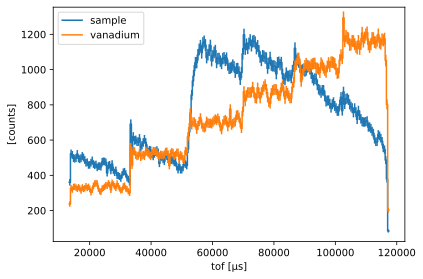
For diagnostic purposes, it can be useful to visualize the individual frames before and after the stitching process. The wfm.plot module provides two helper functions to do just this:
[16]:
wfm.plot.frames_before_stitching(data=ds['sample'], frames=frames, dim='time')
[16]:
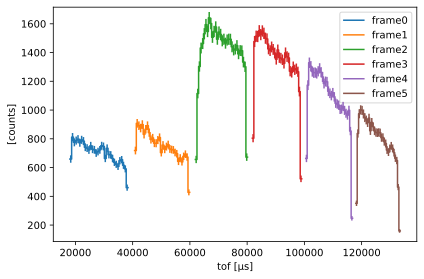
[17]:
wfm.plot.frames_after_stitching(data=ds['sample'], frames=frames, dim='time')
[17]:
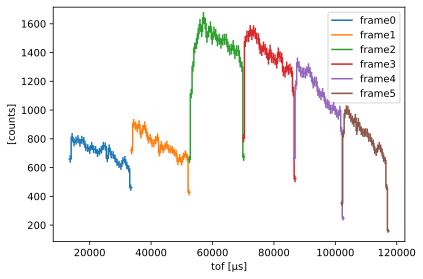
Convert to wavelength#
Now that the data coordinate is time-of-flight (tof), we can use scippneutron to perform the unit conversion from tof to wavelength.
[18]:
from scippneutron.conversion.graph import beamline, tof
graph = {**beamline.beamline(scatter=False), **tof.elastic("tof")}
converted = stitched.transform_coords("wavelength", graph=graph)
converted.plot()
[18]:
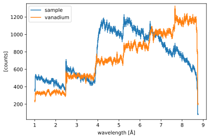
Normalization#
Normalization is performed simply by dividing the counts of the sample run by the counts of the vanadium run.
[19]:
normalized = converted['sample'] / converted['vanadium']
normalized.plot()
[19]:
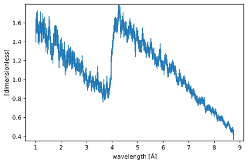
Comparing to the raw wavelengths#
The final step is a sanity check to verify that the wavelength-dependent data obtained from the stitching process agrees (to within the beamline resolution) with the original wavelength distribution that was generated at the start of the workflow.
For this, we simply histogram the raw neutron events using the same bins as the normalized data, filtering out the neutrons with invalid flight paths.
[20]:
for item in events.values():
item["wavelength_counts"], _ = np.histogram(
item["wavelengths"].values[item["valid_indices"]],
bins=normalized.coords['wavelength'].values,
)
We then normalize the sample by the vanadium run, and plot the resulting spectrum alongside the one obtained from the stitching.
[21]:
original = sc.DataArray(
data=sc.array(
dims=['wavelength'],
values=events["sample"]["wavelength_counts"]
/ events["vanadium"]["wavelength_counts"],
),
coords={"wavelength": normalized.coords['wavelength']},
)
sc.plot({"stitched": normalized, "original": original})
/tmp/ipykernel_5517/3402972659.py:4: RuntimeWarning: invalid value encountered in divide
values=events["sample"]["wavelength_counts"]
[21]:
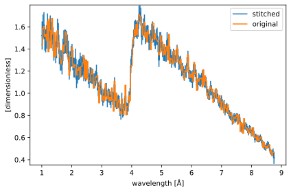
We can see that the counts in the stitched data agree very well with the original data. There is some smoothing of the data seen in the stitched result, and this is expected because of the resolution limitations of the beamline due to its long source pulse. This smoothing (or smearing) would, however, be much stronger if WFM choppers were not used.
Without WFM choppers#
In this section, we compare the results obtained above to a beamline that does not have a WFM chopper system. We make a new set of events, where the number of events is equal to the number of neutrons that make it through the chopper cascade in the previous case.
[22]:
nevents_no_wfm = len(events["sample"]["valid_times"])
events_no_wfm = {
"sample": {
"wavelengths": sc.array(
dims=["event"],
values=np.random.choice(x, size=nevents_no_wfm, p=y / np.sum(y)),
unit="angstrom",
),
"birth_times": sc.array(
dims=["event"],
values=np.random.random(nevents_no_wfm)
* coords["source_pulse_length"].value,
unit="us",
)
+ coords["source_pulse_t_0"],
},
"vanadium": {
"wavelengths": sc.array(
dims=["event"],
values=np.random.random(nevents_no_wfm) * 9.0 + 1.0,
unit="angstrom",
),
"birth_times": sc.array(
dims=["event"],
values=np.random.random(nevents_no_wfm)
* coords["source_pulse_length"].value,
unit="us",
)
+ coords["source_pulse_t_0"],
},
}
for key, item in events_no_wfm.items():
item["arrival_times"] = alpha * dz * item["wavelengths"] + item["birth_times"]
events_no_wfm["sample"]["arrival_times"]
[22]:
- (event: 196024)float64µs6.530e+04, 1.128e+05, ..., 1.006e+05, 5.153e+04
Values:
array([ 65302.94611623, 112805.42350186, 101930.39186309, ..., 81065.33726131, 100603.8288193 , 51528.26109646])
We then histogram these events to create a new Dataset. Because we are no longer make new pulses with the WFM choppers, the event time-of-flight is simply the arrival time of the event at the detector.
[23]:
tmin = min([item["arrival_times"].values.min() for item in events_no_wfm.values()])
tmax = max([item["arrival_times"].values.max() for item in events_no_wfm.values()])
dt = 0.1 * (tmax - tmin)
time_coord_no_wfm = sc.linspace(
dim='tof',
start=tmin - dt,
stop=tmax + dt,
num=257,
unit=events_no_wfm["sample"]["arrival_times"].unit,
)
data_no_wfm = {}
# Histogram the data
for key, item in events_no_wfm.items():
da = sc.DataArray(
data=sc.ones(
dims=['tof'],
shape=[len(item["arrival_times"])],
unit=sc.units.counts,
with_variances=True,
),
coords={
'tof': sc.array(
dims=['tof'], values=item["arrival_times"].values, unit=sc.units.us
)
},
)
data_no_wfm[key] = da.hist(tof=time_coord_no_wfm)
ds_no_wfm = sc.Dataset(data_no_wfm, coords=coords)
ds_no_wfm
[23]:
- tof: 256
- chopper_wfm_1()PyObjectDataGroup(sizes={'frame': 6}, keys=['frequency', 'position', 'phase', 'cutout...
Values:
DataGroup(sizes={'frame': 6}, keys=[ frequency: Variable({}), position: Variable({}), phase: Variable({}), cutout_angles_center: Variable({'frame': 6}), cutout_angles_width: Variable({'frame': 6}), kind: Variable({}), ]) - chopper_wfm_2()PyObjectDataGroup(sizes={'frame': 6}, keys=['frequency', 'position', 'phase', 'cutout...
Values:
DataGroup(sizes={'frame': 6}, keys=[ frequency: Variable({}), position: Variable({}), phase: Variable({}), cutout_angles_center: Variable({'frame': 6}), cutout_angles_width: Variable({'frame': 6}), kind: Variable({}), ]) - position()vector3m[ 0. 0. 60.]
Values:
array([ 0., 0., 60.]) - source_position()vector3m[0. 0. 0.]
Values:
array([0., 0., 0.]) - source_pulse_length()float64µs2860.0
Values:
array(2860.) - source_pulse_t_0()float64µs130.0
Values:
array(130.) - tof(tof [bin-edge])float64µs1370.746, 2023.773, ..., 1.679e+05, 1.685e+05
Values:
array([ 1370.74550387, 2023.77349072, 2676.80147757, 3329.82946442, 3982.85745127, 4635.88543812, 5288.91342497, 5941.94141182, 6594.96939867, 7247.99738552, 7901.02537237, 8554.05335923, 9207.08134608, 9860.10933293, 10513.13731978, 11166.16530663, 11819.19329348, 12472.22128033, 13125.24926718, 13778.27725403, 14431.30524088, 15084.33322773, 15737.36121458, 16390.38920143, 17043.41718828, 17696.44517513, 18349.47316198, 19002.50114883, 19655.52913568, 20308.55712253, 20961.58510938, 21614.61309623, 22267.64108308, 22920.66906993, 23573.69705678, 24226.72504363, 24879.75303048, 25532.78101734, 26185.80900419, 26838.83699104, 27491.86497789, 28144.89296474, 28797.92095159, 29450.94893844, 30103.97692529, 30757.00491214, 31410.03289899, 32063.06088584, 32716.08887269, 33369.11685954, 34022.14484639, 34675.17283324, 35328.20082009, 35981.22880694, 36634.25679379, 37287.28478064, 37940.31276749, 38593.34075434, 39246.36874119, 39899.39672804, 40552.42471489, 41205.45270174, 41858.48068859, 42511.50867544, 43164.5366623 , 43817.56464915, 44470.592636 , 45123.62062285, 45776.6486097 , 46429.67659655, 47082.7045834 , 47735.73257025, 48388.7605571 , 49041.78854395, 49694.8165308 , 50347.84451765, 51000.8725045 , 51653.90049135, 52306.9284782 , 52959.95646505, 53612.9844519 , 54266.01243875, 54919.0404256 , 55572.06841245, 56225.0963993 , 56878.12438615, 57531.152373 , 58184.18035985, 58837.2083467 , 59490.23633355, 60143.2643204 , 60796.29230726, 61449.32029411, 62102.34828096, 62755.37626781, 63408.40425466, 64061.43224151, 64714.46022836, 65367.48821521, 66020.51620206, 66673.54418891, 67326.57217576, 67979.60016261, 68632.62814946, 69285.65613631, 69938.68412316, 70591.71211001, 71244.74009686, 71897.76808371, 72550.79607056, 73203.82405741, 73856.85204426, 74509.88003111, 75162.90801796, 75815.93600481, 76468.96399166, 77121.99197851, 77775.01996536, 78428.04795222, 79081.07593907, 79734.10392592, 80387.13191277, 81040.15989962, 81693.18788647, 82346.21587332, 82999.24386017, 83652.27184702, 84305.29983387, 84958.32782072, 85611.35580757, 86264.38379442, 86917.41178127, 87570.43976812, 88223.46775497, 88876.49574182, 89529.52372867, 90182.55171552, 90835.57970237, 91488.60768922, 92141.63567607, 92794.66366292, 93447.69164977, 94100.71963662, 94753.74762347, 95406.77561032, 96059.80359718, 96712.83158403, 97365.85957088, 98018.88755773, 98671.91554458, 99324.94353143, 99977.97151828, 100630.99950513, 101284.02749198, 101937.05547883, 102590.08346568, 103243.11145253, 103896.13943938, 104549.16742623, 105202.19541308, 105855.22339993, 106508.25138678, 107161.27937363, 107814.30736048, 108467.33534733, 109120.36333418, 109773.39132103, 110426.41930788, 111079.44729473, 111732.47528158, 112385.50326843, 113038.53125528, 113691.55924214, 114344.58722899, 114997.61521584, 115650.64320269, 116303.67118954, 116956.69917639, 117609.72716324, 118262.75515009, 118915.78313694, 119568.81112379, 120221.83911064, 120874.86709749, 121527.89508434, 122180.92307119, 122833.95105804, 123486.97904489, 124140.00703174, 124793.03501859, 125446.06300544, 126099.09099229, 126752.11897914, 127405.14696599, 128058.17495284, 128711.20293969, 129364.23092654, 130017.25891339, 130670.28690024, 131323.3148871 , 131976.34287395, 132629.3708608 , 133282.39884765, 133935.4268345 , 134588.45482135, 135241.4828082 , 135894.51079505, 136547.5387819 , 137200.56676875, 137853.5947556 , 138506.62274245, 139159.6507293 , 139812.67871615, 140465.706703 , 141118.73468985, 141771.7626767 , 142424.79066355, 143077.8186504 , 143730.84663725, 144383.8746241 , 145036.90261095, 145689.9305978 , 146342.95858465, 146995.9865715 , 147649.01455835, 148302.0425452 , 148955.07053206, 149608.09851891, 150261.12650576, 150914.15449261, 151567.18247946, 152220.21046631, 152873.23845316, 153526.26644001, 154179.29442686, 154832.32241371, 155485.35040056, 156138.37838741, 156791.40637426, 157444.43436111, 158097.46234796, 158750.49033481, 159403.51832166, 160056.54630851, 160709.57429536, 161362.60228221, 162015.63026906, 162668.65825591, 163321.68624276, 163974.71422961, 164627.74221646, 165280.77020331, 165933.79819017, 166586.82617702, 167239.85416387, 167892.88215072, 168545.91013757])
- sample(tof)float64counts0.0, 0.0, ..., 0.0, 0.0σ = 0.0, 0.0, ..., 0.0, 0.0
Values:
array([ 0., 0., 0., 0., 0., 0., 0., 0., 0., 0., 0., 0., 0., 0., 0., 0., 0., 0., 0., 0., 0., 75., 402., 688., 1035., 1339., 1418., 1404., 1441., 1402., 1336., 1339., 1392., 1361., 1349., 1313., 1411., 1332., 1253., 1325., 1254., 1332., 1231., 1324., 1266., 1181., 1211., 1221., 1215., 1202., 1135., 1160., 1134., 1147., 1148., 1156., 1144., 1155., 1140., 1129., 1023., 1121., 1016., 1034., 1077., 1030., 1004., 1014., 978., 924., 1001., 931., 913., 965., 877., 914., 884., 891., 864., 859., 881., 868., 842., 834., 786., 834., 836., 826., 803., 834., 893., 924., 1085., 1213., 1310., 1457., 1402., 1466., 1490., 1520., 1540., 1483., 1556., 1448., 1463., 1409., 1536., 1433., 1458., 1464., 1445., 1478., 1412., 1343., 1381., 1363., 1348., 1389., 1282., 1324., 1236., 1280., 1195., 1287., 1281., 1257., 1265., 1182., 1232., 1269., 1178., 1162., 1187., 1245., 1193., 1075., 1109., 1157., 1111., 1069., 1058., 1085., 1040., 1016., 1081., 997., 990., 992., 1032., 973., 962., 920., 976., 957., 977., 967., 937., 974., 911., 883., 925., 905., 816., 851., 858., 832., 820., 792., 832., 815., 783., 764., 745., 725., 783., 738., 716., 733., 706., 708., 645., 708., 678., 686., 637., 590., 590., 584., 585., 599., 592., 536., 550., 515., 549., 505., 524., 494., 483., 456., 447., 448., 448., 432., 424., 443., 398., 349., 366., 356., 345., 332., 347., 319., 318., 309., 311., 285., 275., 262., 228., 247., 237., 226., 195., 186., 173., 159., 158., 162., 129., 95., 50., 27., 8., 0., 0., 0., 0., 0., 0., 0., 0., 0., 0., 0., 0., 0., 0., 0., 0., 0., 0., 0., 0., 0.])
Variances (σ²):
array([ 0., 0., 0., 0., 0., 0., 0., 0., 0., 0., 0., 0., 0., 0., 0., 0., 0., 0., 0., 0., 0., 75., 402., 688., 1035., 1339., 1418., 1404., 1441., 1402., 1336., 1339., 1392., 1361., 1349., 1313., 1411., 1332., 1253., 1325., 1254., 1332., 1231., 1324., 1266., 1181., 1211., 1221., 1215., 1202., 1135., 1160., 1134., 1147., 1148., 1156., 1144., 1155., 1140., 1129., 1023., 1121., 1016., 1034., 1077., 1030., 1004., 1014., 978., 924., 1001., 931., 913., 965., 877., 914., 884., 891., 864., 859., 881., 868., 842., 834., 786., 834., 836., 826., 803., 834., 893., 924., 1085., 1213., 1310., 1457., 1402., 1466., 1490., 1520., 1540., 1483., 1556., 1448., 1463., 1409., 1536., 1433., 1458., 1464., 1445., 1478., 1412., 1343., 1381., 1363., 1348., 1389., 1282., 1324., 1236., 1280., 1195., 1287., 1281., 1257., 1265., 1182., 1232., 1269., 1178., 1162., 1187., 1245., 1193., 1075., 1109., 1157., 1111., 1069., 1058., 1085., 1040., 1016., 1081., 997., 990., 992., 1032., 973., 962., 920., 976., 957., 977., 967., 937., 974., 911., 883., 925., 905., 816., 851., 858., 832., 820., 792., 832., 815., 783., 764., 745., 725., 783., 738., 716., 733., 706., 708., 645., 708., 678., 686., 637., 590., 590., 584., 585., 599., 592., 536., 550., 515., 549., 505., 524., 494., 483., 456., 447., 448., 448., 432., 424., 443., 398., 349., 366., 356., 345., 332., 347., 319., 318., 309., 311., 285., 275., 262., 228., 247., 237., 226., 195., 186., 173., 159., 158., 162., 129., 95., 50., 27., 8., 0., 0., 0., 0., 0., 0., 0., 0., 0., 0., 0., 0., 0., 0., 0., 0., 0., 0., 0., 0., 0.]) - vanadium(tof)float64counts0.0, 0.0, ..., 0.0, 0.0σ = 0.0, 0.0, ..., 0.0, 0.0
Values:
array([ 0., 0., 0., 0., 0., 0., 0., 0., 0., 0., 0., 0., 0., 0., 0., 0., 0., 0., 0., 0., 0., 42., 264., 459., 657., 934., 972., 929., 960., 967., 893., 906., 994., 878., 915., 923., 923., 913., 974., 975., 914., 962., 887., 953., 959., 929., 930., 974., 961., 937., 939., 883., 976., 920., 933., 918., 992., 966., 874., 924., 906., 940., 912., 955., 934., 892., 918., 940., 891., 916., 900., 926., 938., 907., 976., 953., 976., 899., 950., 910., 916., 908., 956., 975., 1035., 913., 974., 951., 949., 936., 933., 921., 911., 950., 901., 925., 965., 948., 988., 951., 948., 912., 920., 941., 928., 923., 889., 913., 962., 982., 1002., 904., 932., 975., 913., 935., 947., 894., 916., 957., 937., 993., 961., 988., 943., 967., 935., 939., 940., 959., 910., 981., 950., 927., 890., 931., 977., 929., 932., 956., 888., 874., 935., 891., 889., 933., 924., 952., 965., 965., 973., 998., 937., 960., 913., 992., 937., 942., 998., 899., 939., 911., 930., 894., 946., 940., 980., 962., 926., 874., 905., 981., 919., 987., 945., 899., 995., 924., 920., 941., 941., 959., 929., 956., 954., 987., 905., 924., 952., 929., 929., 977., 989., 945., 920., 948., 974., 915., 900., 895., 951., 966., 948., 954., 968., 956., 954., 932., 935., 898., 939., 967., 970., 951., 927., 857., 926., 910., 909., 928., 976., 951., 919., 936., 912., 899., 966., 880., 914., 930., 905., 690., 479., 257., 61., 0., 0., 0., 0., 0., 0., 0., 0., 0., 0., 0., 0., 0., 0., 0., 0., 0., 0., 0., 0., 0.])
Variances (σ²):
array([ 0., 0., 0., 0., 0., 0., 0., 0., 0., 0., 0., 0., 0., 0., 0., 0., 0., 0., 0., 0., 0., 42., 264., 459., 657., 934., 972., 929., 960., 967., 893., 906., 994., 878., 915., 923., 923., 913., 974., 975., 914., 962., 887., 953., 959., 929., 930., 974., 961., 937., 939., 883., 976., 920., 933., 918., 992., 966., 874., 924., 906., 940., 912., 955., 934., 892., 918., 940., 891., 916., 900., 926., 938., 907., 976., 953., 976., 899., 950., 910., 916., 908., 956., 975., 1035., 913., 974., 951., 949., 936., 933., 921., 911., 950., 901., 925., 965., 948., 988., 951., 948., 912., 920., 941., 928., 923., 889., 913., 962., 982., 1002., 904., 932., 975., 913., 935., 947., 894., 916., 957., 937., 993., 961., 988., 943., 967., 935., 939., 940., 959., 910., 981., 950., 927., 890., 931., 977., 929., 932., 956., 888., 874., 935., 891., 889., 933., 924., 952., 965., 965., 973., 998., 937., 960., 913., 992., 937., 942., 998., 899., 939., 911., 930., 894., 946., 940., 980., 962., 926., 874., 905., 981., 919., 987., 945., 899., 995., 924., 920., 941., 941., 959., 929., 956., 954., 987., 905., 924., 952., 929., 929., 977., 989., 945., 920., 948., 974., 915., 900., 895., 951., 966., 948., 954., 968., 956., 954., 932., 935., 898., 939., 967., 970., 951., 927., 857., 926., 910., 909., 928., 976., 951., 919., 936., 912., 899., 966., 880., 914., 930., 905., 690., 479., 257., 61., 0., 0., 0., 0., 0., 0., 0., 0., 0., 0., 0., 0., 0., 0., 0., 0., 0., 0., 0., 0., 0.])
[24]:
sc.plot(ds_no_wfm)
[24]:
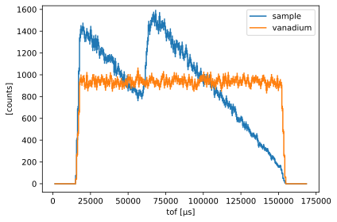
We then perform the standard unit conversion and normalization
[25]:
converted_no_wfm = ds_no_wfm.transform_coords("wavelength", graph=graph)
normalized_no_wfm = converted_no_wfm['sample'] / converted_no_wfm['vanadium']
normalized_no_wfm.plot()
[25]:
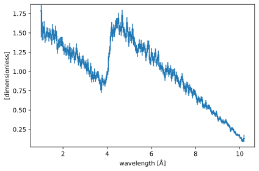
In the same manner and in the previous section, we compare to the real neutron wavelengths
[26]:
for item in events_no_wfm.values():
item["wavelength_counts"], _ = np.histogram(
item["wavelengths"].values, bins=normalized_no_wfm.coords['wavelength'].values
)
[27]:
original_no_wfm = sc.DataArray(
data=sc.array(
dims=['wavelength'],
values=events_no_wfm["sample"]["wavelength_counts"]
/ events_no_wfm["vanadium"]["wavelength_counts"],
),
coords={"wavelength": normalized_no_wfm.coords['wavelength']},
)
w_min = 2.0 * sc.units.angstrom
w_max = 5.5 * sc.units.angstrom
sc.plot(
{
"without WFM": normalized_no_wfm['wavelength', w_min:w_max],
"original": original_no_wfm['wavelength', w_min:w_max],
},
errorbars=False,
)
/tmp/ipykernel_5517/4211156826.py:4: RuntimeWarning: invalid value encountered in divide
values=events_no_wfm["sample"]["wavelength_counts"]
[27]:
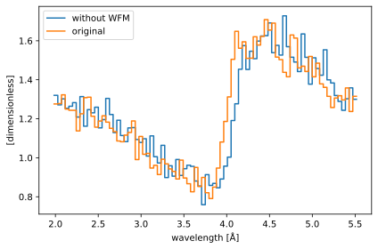
We can see that there is a significant shift between the calculated wavelength of the Bragg edge around \(4\unicode{x212B}\) and the original underlying wavelengths. In comparison, the same plot for the WFM run yields a much better agreement
[28]:
sc.plot(
{
"stitched": normalized['wavelength', w_min:w_max],
"original": original['wavelength', w_min:w_max],
},
errorbars=False,
)
[28]:
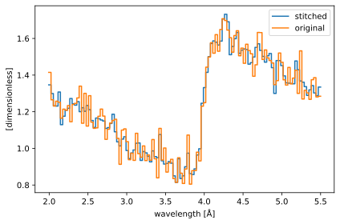
Working in event mode#
It is also possible to work with WFM data in event mode. The stitch utility will accept both histogrammed and binned (event) data.
We first create a new dataset, with the same events as in the first example, but this time we bin the data with sc.bin instead of using sc.histogram, so we can retain the raw events.
[29]:
for item in events.values():
item["valid_times"] = item["arrival_times"].values[item["valid_indices"]]
tmin = min([item["valid_times"].min() for item in events.values()])
tmax = max([item["valid_times"].max() for item in events.values()])
dt = 0.1 * (tmax - tmin)
time_coord = sc.linspace(
dim='time',
start=tmin - dt,
stop=tmax + dt,
num=257,
unit=events["sample"]["arrival_times"].unit,
)
data_event = {}
# Bin the data
for key, item in events.items():
da = sc.DataArray(
data=sc.ones(
dims=['event'],
shape=[len(item["valid_times"])],
unit=sc.units.counts,
with_variances=True,
),
coords={
'time': sc.array(
dims=['event'], values=item["valid_times"], unit=sc.units.us
)
},
)
data_event[key] = da.bin(time=time_coord)
ds_event = sc.Dataset(data_event, coords=coords)
ds_event
[29]:
- time: 256
- chopper_wfm_1()PyObjectDataGroup(sizes={'frame': 6}, keys=['frequency', 'position', 'phase', 'cutout...
Values:
DataGroup(sizes={'frame': 6}, keys=[ frequency: Variable({}), position: Variable({}), phase: Variable({}), cutout_angles_center: Variable({'frame': 6}), cutout_angles_width: Variable({'frame': 6}), kind: Variable({}), ]) - chopper_wfm_2()PyObjectDataGroup(sizes={'frame': 6}, keys=['frequency', 'position', 'phase', 'cutout...
Values:
DataGroup(sizes={'frame': 6}, keys=[ frequency: Variable({}), position: Variable({}), phase: Variable({}), cutout_angles_center: Variable({'frame': 6}), cutout_angles_width: Variable({'frame': 6}), kind: Variable({}), ]) - position()vector3m[ 0. 0. 60.]
Values:
array([ 0., 0., 60.]) - source_position()vector3m[0. 0. 0.]
Values:
array([0., 0., 0.]) - source_pulse_length()float64µs2860.0
Values:
array(2860.) - source_pulse_t_0()float64µs130.0
Values:
array(130.) - time(time [bin-edge])float64µs6358.679, 6900.323, ..., 1.445e+05, 1.450e+05
Values:
array([ 6358.67925226, 6900.32304418, 7441.96683611, 7983.61062803, 8525.25441996, 9066.89821189, 9608.54200381, 10150.18579574, 10691.82958766, 11233.47337959, 11775.11717151, 12316.76096344, 12858.40475537, 13400.04854729, 13941.69233922, 14483.33613114, 15024.97992307, 15566.623715 , 16108.26750692, 16649.91129885, 17191.55509077, 17733.1988827 , 18274.84267462, 18816.48646655, 19358.13025848, 19899.7740504 , 20441.41784233, 20983.06163425, 21524.70542618, 22066.34921811, 22607.99301003, 23149.63680196, 23691.28059388, 24232.92438581, 24774.56817774, 25316.21196966, 25857.85576159, 26399.49955351, 26941.14334544, 27482.78713736, 28024.43092929, 28566.07472122, 29107.71851314, 29649.36230507, 30191.00609699, 30732.64988892, 31274.29368085, 31815.93747277, 32357.5812647 , 32899.22505662, 33440.86884855, 33982.51264047, 34524.1564324 , 35065.80022433, 35607.44401625, 36149.08780818, 36690.7316001 , 37232.37539203, 37774.01918396, 38315.66297588, 38857.30676781, 39398.95055973, 39940.59435166, 40482.23814358, 41023.88193551, 41565.52572744, 42107.16951936, 42648.81331129, 43190.45710321, 43732.10089514, 44273.74468707, 44815.38847899, 45357.03227092, 45898.67606284, 46440.31985477, 46981.9636467 , 47523.60743862, 48065.25123055, 48606.89502247, 49148.5388144 , 49690.18260632, 50231.82639825, 50773.47019018, 51315.1139821 , 51856.75777403, 52398.40156595, 52940.04535788, 53481.68914981, 54023.33294173, 54564.97673366, 55106.62052558, 55648.26431751, 56189.90810943, 56731.55190136, 57273.19569329, 57814.83948521, 58356.48327714, 58898.12706906, 59439.77086099, 59981.41465292, 60523.05844484, 61064.70223677, 61606.34602869, 62147.98982062, 62689.63361255, 63231.27740447, 63772.9211964 , 64314.56498832, 64856.20878025, 65397.85257217, 65939.4963641 , 66481.14015603, 67022.78394795, 67564.42773988, 68106.0715318 , 68647.71532373, 69189.35911566, 69731.00290758, 70272.64669951, 70814.29049143, 71355.93428336, 71897.57807528, 72439.22186721, 72980.86565914, 73522.50945106, 74064.15324299, 74605.79703491, 75147.44082684, 75689.08461877, 76230.72841069, 76772.37220262, 77314.01599454, 77855.65978647, 78397.30357839, 78938.94737032, 79480.59116225, 80022.23495417, 80563.8787461 , 81105.52253802, 81647.16632995, 82188.81012188, 82730.4539138 , 83272.09770573, 83813.74149765, 84355.38528958, 84897.02908151, 85438.67287343, 85980.31666536, 86521.96045728, 87063.60424921, 87605.24804113, 88146.89183306, 88688.53562499, 89230.17941691, 89771.82320884, 90313.46700076, 90855.11079269, 91396.75458462, 91938.39837654, 92480.04216847, 93021.68596039, 93563.32975232, 94104.97354424, 94646.61733617, 95188.2611281 , 95729.90492002, 96271.54871195, 96813.19250387, 97354.8362958 , 97896.48008773, 98438.12387965, 98979.76767158, 99521.4114635 , 100063.05525543, 100604.69904736, 101146.34283928, 101687.98663121, 102229.63042313, 102771.27421506, 103312.91800698, 103854.56179891, 104396.20559084, 104937.84938276, 105479.49317469, 106021.13696661, 106562.78075854, 107104.42455047, 107646.06834239, 108187.71213432, 108729.35592624, 109270.99971817, 109812.64351009, 110354.28730202, 110895.93109395, 111437.57488587, 111979.2186778 , 112520.86246972, 113062.50626165, 113604.15005358, 114145.7938455 , 114687.43763743, 115229.08142935, 115770.72522128, 116312.36901321, 116854.01280513, 117395.65659706, 117937.30038898, 118478.94418091, 119020.58797283, 119562.23176476, 120103.87555669, 120645.51934861, 121187.16314054, 121728.80693246, 122270.45072439, 122812.09451632, 123353.73830824, 123895.38210017, 124437.02589209, 124978.66968402, 125520.31347594, 126061.95726787, 126603.6010598 , 127145.24485172, 127686.88864365, 128228.53243557, 128770.1762275 , 129311.82001943, 129853.46381135, 130395.10760328, 130936.7513952 , 131478.39518713, 132020.03897905, 132561.68277098, 133103.32656291, 133644.97035483, 134186.61414676, 134728.25793868, 135269.90173061, 135811.54552254, 136353.18931446, 136894.83310639, 137436.47689831, 137978.12069024, 138519.76448217, 139061.40827409, 139603.05206602, 140144.69585794, 140686.33964987, 141227.98344179, 141769.62723372, 142311.27102565, 142852.91481757, 143394.5586095 , 143936.20240142, 144477.84619335, 145019.48998528])
- sample(time)DataArrayViewbinned data [len=0, len=0, ..., len=0, len=0]
dim='event', content=DataArray( dims=(event: 196024), data=float64[counts], coords={'time':float64[µs]}) - vanadium(time)DataArrayViewbinned data [len=0, len=0, ..., len=0, len=0]
dim='event', content=DataArray( dims=(event: 188750), data=float64[counts], coords={'time':float64[µs]})
The underlying events can be inspected by using the .bins.constituents['data'] property of our objects:
[30]:
ds_event["sample"].bins.constituents['data']
[30]:
- event: 196024
- time(event)float64µs1.812e+04, 1.822e+04, ..., 1.333e+05, 1.334e+05
Values:
array([ 18119.40258962, 18224.68653735, 18104.79393712, ..., 133196.6964019 , 133288.52178163, 133352.36035354])
- (event)float64counts1.0, 1.0, ..., 1.0, 1.0σ = 1.0, 1.0, ..., 1.0, 1.0
Values:
array([1., 1., 1., ..., 1., 1., 1.])
Variances (σ²):
array([1., 1., 1., ..., 1., 1., 1.])
We can visualize this to make sure it looks the same as the histogrammed case above:
[31]:
sc.plot(ds_event.hist())
[31]:
As explained above, the stitch routine accepts both histogrammed and binned (event) data. So stitching the binned data works in the exact same way as above, namely
[32]:
stitched_event = wfm.stitch(frames=frames, data=ds_event, dim='time')
stitched_event
[32]:
- tof: 1
- chopper_wfm_1()PyObjectDataGroup(sizes={'frame': 6}, keys=['frequency', 'position', 'phase', 'cutout...
Values:
DataGroup(sizes={'frame': 6}, keys=[ frequency: Variable({}), position: Variable({}), phase: Variable({}), cutout_angles_center: Variable({'frame': 6}), cutout_angles_width: Variable({'frame': 6}), kind: Variable({}), ]) - chopper_wfm_2()PyObjectDataGroup(sizes={'frame': 6}, keys=['frequency', 'position', 'phase', 'cutout...
Values:
DataGroup(sizes={'frame': 6}, keys=[ frequency: Variable({}), position: Variable({}), phase: Variable({}), cutout_angles_center: Variable({'frame': 6}), cutout_angles_width: Variable({'frame': 6}), kind: Variable({}), ]) - position()vector3m[ 0. 0. 60.]
Values:
array([ 0., 0., 60.]) - source_position()vector3m[0. 0. 7.]
Values:
array([0., 0., 7.]) - source_pulse_length()float64µs2860.0
Values:
array(2860.) - source_pulse_t_0()float64µs130.0
Values:
array(130.) - tof(tof [bin-edge])float64µs1.334e+04, 1.174e+05
Values:
array([ 13340.38075481, 117437.42868218])
- sample(tof)DataArrayViewbinned data [len=195774]
dim='event', content=DataArray( dims=(event: 195774), data=float64[counts], coords={'tof':float64[µs]}) - vanadium(tof)DataArrayViewbinned data [len=188563]
dim='event', content=DataArray( dims=(event: 188563), data=float64[counts], coords={'tof':float64[µs]})
The stitch function will return a data structure with a single bin in the 'tof' dimension. Visualizing this data is therefore slightly more tricky, because the data needs to be histogrammed using a finer binning before a useful plot can be made.
[33]:
sc.plot({key: item.hist(tof=256) for key, item in stitched_event.items()})
[33]:
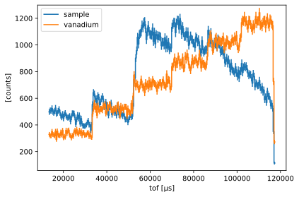
At this point, it may be useful to compare the results of the two different stitching operations.
[34]:
rebinned = stitched_event["sample"].bin(tof=stitched["sample"].coords['tof'])
sc.plot({"events": rebinned.hist(), "histogram": stitched["sample"]}, errorbars=False)
[34]:
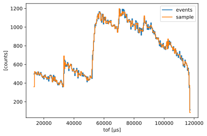
We note that histogramming the data early introduces some smoothing in the data.
We can of course continue in event mode and perform the unit conversion and normalization to the Vanadium.
[35]:
converted_event = stitched_event.transform_coords("wavelength", graph=graph)
[36]:
# In a normalization operation, the denominator must be histogrammed (it cannot be events)
# Note: we drop the variances with `sc.values` because the event normalization introduces correlations
# which are not handled by Scipp's uncertainty propagation. This is ok here as the size of the
# standard deviations is not the focus of this notebook.
hist = sc.values(
converted_event["vanadium"].hist(
wavelength=converted["sample"].coords['wavelength']
)
)
# Normalizing binned data is done using the sc.lookup helper
normalized_event = converted_event["sample"].bins / sc.lookup(
func=hist, dim='wavelength'
)
Finally, we compare the end result with the original wavelengths, and see that the agreement is once again good.
[37]:
to_plot = normalized_event.bin(
wavelength=converted["sample"].coords['wavelength']
).hist()
sc.plot({"stitched_event": to_plot, "original": original})
[37]:
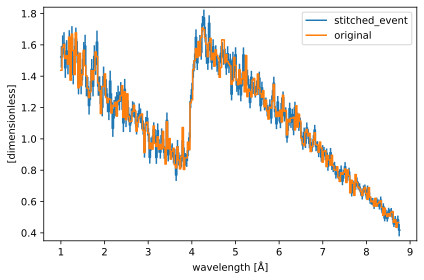
We can also compare directly to the histogrammed version, to see that both methods remain in agreement to a high degree.
[38]:
sc.plot(
{
"stitched": normalized['wavelength', w_min:w_max],
"original": original['wavelength', w_min:w_max],
"stitched_event": to_plot['wavelength', w_min:w_max],
}
)
[38]:
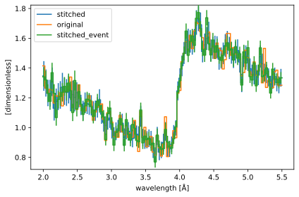